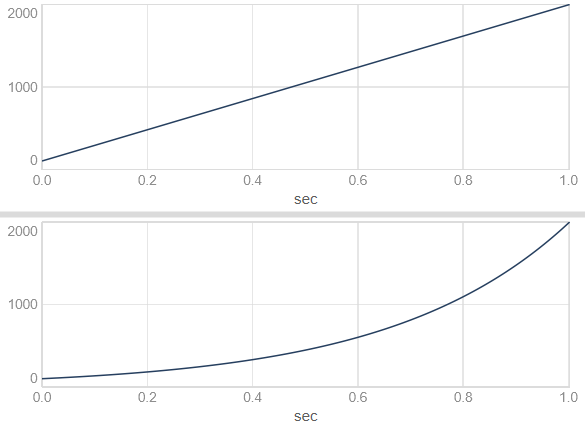
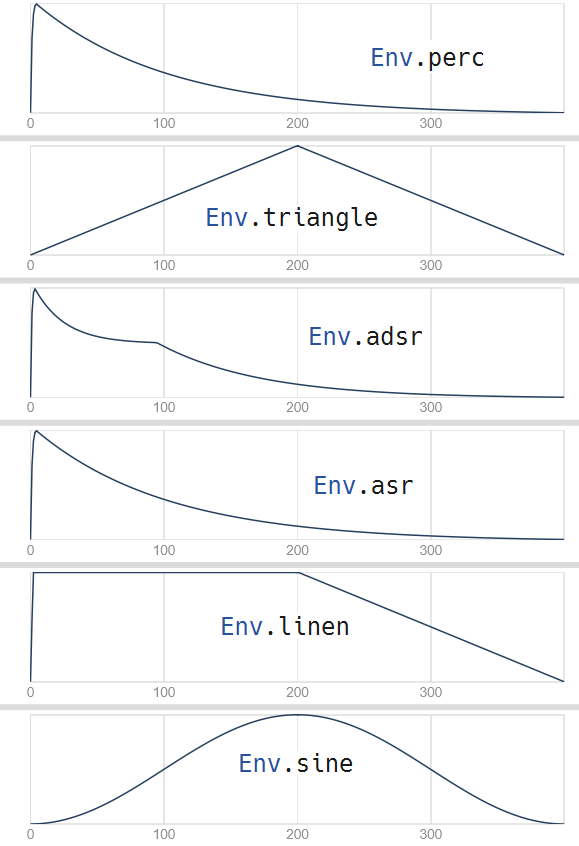

Introduktion til kapitlet
Lydens forandring over tid er en vigtig del af lyddesign. Et af de vigtigste redskaber til at arbejde med lydlig forandring over tid er envelopes. Envelopes anvendes i elektronisk klangdannelse typisk til at styre en tone eller en lyds volumen over tid, men envelopes kan med fordel bruges på mange andre måder.
Brug af envelopes
Hvor mange synthesizere kun har en ADSR-envelope, har SuperCollider en række forskellige, indbyggede envelopes. Man kan også definere sine egne envelopes. Det er endda muligt at loope envelopes, så de kommer til at udgøre LFO'er. Dermed kan envelopes potentielt være et særdeles kreativt virkemiddel.
Line og XLine - enkle envelope-generatorer
De mest enkle envelope-generatorer er Line og XLine - UGens, som genererer en henholdsvis lineær og eksponentiel udvikling fra ét punkt til et andet over et specificeret tidsrum. Her er et eksempel, hvor envelopen bevæger sig fra 100 til 2000 i løbet af 1 sekund:

Vi bruger Line og XLine ligesom andre UGens, fx til at styre frekvensen for en oscillator:
{SinOsc.ar(Line.kr(100, 800, 1)) * 0.1}.play; // lineær udvikling over 1 sekund
{SinOsc.ar(XLine.kr(100, 800, 5)) * 0.1}.play; // eksponentiel udvikling over 5 sekunder
{SinOsc.ar(XLine.kr(100, 800, 0.050)) * 0.1}.play; // eksponentiel udvikling over 50 milisekunder
Env og EnvGen - envelopes for enhver smag
Line og XLine genererer envelopes med ét segment (dvs. ét tidsinterval med ét start- og slutpunkt). Envelopes har imidlertid meget ofte mere end ét segment. Og de forskellige segmenter kan have meget forskellige former/"krumninger".
Vi bruger Env-klassen til at definere disse mere sammensatte envelopes. Her er fx nogle forskellige indbyggede envelopes:
Vi kan vise en grafisk repræsentation med .plot - fx Env.perc.plot. Her er de ovennævnte envelopes plottet på denne måde:

Et eksempel: Env.perc
Hvordan bruger vi envelopes? Lad os kigge på et eksempel - Env.perc.
De to segmenter i Env.perc hedder attack og release, og vi kan specificere deres varighed med argumenter - her en attack-tid på 1 sekund og en release-tid på 4 sekunder:
Env.perc(1, 4)
// Vi kan også vælge blot at justere release-segmentet:
Env.perc(releaseTime: 10)
// Segmenternes krumning kan justeres med argumentet curve:
[Env.perc(curve: 5), Env.perc(curve: 0), Env.perc(curve: -5)].plot;
Når vi skal bruge en envelope som Env.perc i vores lyddesign, skal vi tage højde for, at Env blot specificerer en envelope-form - en Env er ikke en UGen. For at bruge Env-baserede envelopes skal vi anvende EnvGen, som er en envelope-generator-UGen. Vi fortæller EnvGen, at vi ønsker en Env.perc ved at angive den som første argument: EnvGen.kr(Env.perc).
Vi kan nu bruge EnvGen ligesom Line og XLine ovenfor - fx til at modulere lydstyrken for en oscillator. Som nævnt i kursusgang 3 gør vi dette ved ganske enkelt at gange outputtet fra oscillatoren med outputtet fra envelope-generatoren:
Inden vi går videre, er det vigtigt at skrive sig bag øret, at EnvGen ofte noteres implicit (skjult). Følgende to linjer har præcis samme resultat, og man kan selv vælge hvilken form man foretrækker:
{PinkNoise.ar * EnvGen.kr(Env.perc) * 0.1}.play;
{PinkNoise.ar * Env.perc.kr * 0.1}.play;
Det er ofte nyttigt at skille disse elementer ad på forskellige linjer og bruge lokale variabler:
(
{
var env = EnvGen.kr(Env.perc);
var sig = PinkNoise.ar;
sig * env * 0.1;
}.play;
)
Når vi gemmer envelope-generatoren under en lokal variabel, kan vi efterfølgende bruge envelope-signalet til flere forskellige formål. Fx kan vi styre både tonehøjde og lydstyrke med den samme envelope, således at flere parametre udvikler sig over tid i takt med hinanden. Dette kan give anledning til yderst interessante lyddesign, alt efter hvilke parametre man modulerer med envelopen!
Lad os tage et eksempel:
(
{
// Envelopen oprettes og gemmes under den lokale variabel env
var env = EnvGen.kr(Env.perc(0.1, 5));
// Envelopesignalet skaleres med .exprange til en mere passende rækkevidde for tonehøjde
// Resultatet gemmes under variablen freq, som bruges til oscillatoren Pulse
var freq = env.exprange(440, 880);
var sig = Pulse.ar(freq);
// Det umodificerede envelopesignal anvendes til at styre lydstyrken
sig * env * 0.1;
}.play;
)
Standardenvelopes
Ud over Env.perc og Env.new/Env.circle har vi adgang til en række standard-envelopes. Her kan vi skelne mellem to slags envelopes: Selvafsluttende envelopes, hvor vi kender eller angiver varigheden på forhånd, og vedvarende envelopes, hvor varigheden afhænger af .
Selvafsluttende envelopes (uden gate)
Selvafsluttende envelopes som Env.perc varer præcis den tid det tager at gennemløbe alle envelopens segmenter. Envelopens varighed er fast og afhænger ikke af en såkaldt gate. Det gælder blandt andet disse standardenvelopes:
Env.percEnv.triangleEnv.linenEnv.sine
Vedvarende envelopes (med gate)
Vedvarende (sustaining) envelopes bliver hængende på et bestemt punkt imellem to segmenter, indtil de bliver bedt om at gå videre. Dette kender vi fra keyboards, hvor tonen begynder at klinge, når vi trykker tangenten ned, og fortsætter indtil vi slipper tangenten igen. Måden hvorpå vi beder envelopen om at fortsætte til næste segment er ved at bruge en såkaldt gate. Centrale eksempler er de følgende envelopes:
Env.asrEnv.adsrEnv.cutoffEnv.dadsr
Når vi bruger Pbind og patterns til at styre artikulationen af toner, styres åbning og lukning af gates til envelopes automatisk. Vi kan dog sagtens anvende vedvarende envelopes med gates manuelt på følgende måde:
// Start en tone med åben gate (gate = 1)
~tone = {arg gate = 1; SinOsc.ar * EnvGen.kr(Env.asr, gate);}.play;
// Vent lidt, før vi går videre til release-segmentet
~tone.set(\gate, 0);
Automatisk oprydning med doneAction
Envelopes er forbundet med noget, der hedder doneAction, som angår hvad SuperColliders lydserver skal gøre med netværket af UGens, når envelope-generatoren har gennemløbet alle envelopens segmenter. I eksemplerne ovenfor har vi ikke bedt SuperCollider om at gøre noget særligt, når envelopen er slut, men det er ofte yderst relevant at fjerne vores UGen-netværk (også kaldet en Synth) fra serveren igen. Dette bliver særligt tydeligt, når vi gennemgår Synth, SynthDef og Pbind.
Hvis du kan se, at du har en række gamle Synths liggende på lydserveren fra eksemplerne ovenfor (kør s.queryAllNodes og tjek post window), kan du fjerne dem med Ctrl-Punktum/Cmd-Punktum.
Vi beder ofte SuperCollider om at rydde op, når en envelope er færdiggjort. Det kan vi gøre ved hjælp af envelope-generatorens doneAction-argument. Sammenlign disse to eksempler (hold øje med Node Tree-vinduet og bemærk hvilken forskel doneAction: Done.freeSelf gør):
s.nodeTree; // vis en liste med alle Synths på lydserveren
{PinkNoise.ar * EnvGen.kr(Env.perc) * 0.1}.play;
{PinkNoise.ar * EnvGen.kr(Env.perc, doneAction: Done.freeSelf) * 0.1}.play;
Hvornår skal man så bruge doneAction: Done.freeSelf? Jo, hvis man har gang i flere envelopes på én gang (hvilket man sagtens kan have i SuperCollider), så er det som tommelfingerregel en god idé at bruge doneAction: Done.freeSelf til den envelope, som styrer tonens lydstyrke over tid. Så undgår vi at få ophobet gamle Synths på lydserveren.
Hvad er doneAction?
doneAction: 2 og doneAction: Done.freeSelf betyder det samme - at Synth'en skal fjernes fra lydserveren, når envelopen er slut.
{PinkNoise.ar * EnvGen.kr(Env.perc, doneAction: Done.freeSelf) * 0.1}.play;
{PinkNoise.ar * EnvGen.kr(Env.perc, doneAction: 2) * 0.1}.play;
Om man bruger doneAction: 2 eller doneAction: Done.freeSelf er helt valgfrit. Førstnævnte er kortest at skrive, men sidstnævnte er umiddelbart lettest at forstå, når man man læser koden.